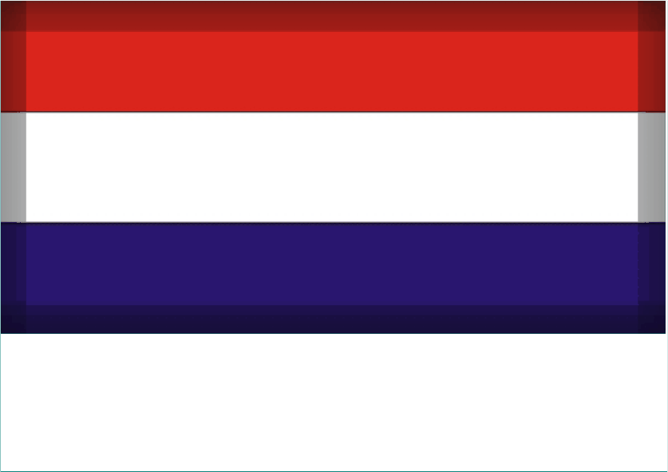

Er zijn vele angsten en fobieën en deze kunnen je leven behoorlijk beheersen en beperken. Je bent niet de
enige die hier mee worstelt; zo'n 20% van de mensen wordt in een periode van hun
leven met sterke angsten geconfronteerd - dat is 1 op de 5 mensen! Angst ondermijnt het zelfvertrouwen sterk en vermindert de kwaliteit van
leven aanzienlijk. Gelukkig is er goed wat aan te doen en hoe sneller je hier hulp bij zoekt, hoe beter.
Er zijn vele angsten en fobieën en deze kunnen je leven behoorlijk beheersen en beperken. Je bent niet de
enige die hier mee worstelt; zo'n 20% van de mensen wordt in een periode van hun
leven met sterke angsten geconfronteerd - dat is 1 op de 5 mensen! Angst ondermijnt het zelfvertrouwen sterk en vermindert de kwaliteit van
leven aanzienlijk. Gelukkig is er goed wat aan te doen en hoe sneller je hier hulp bij zoekt, hoe beter.
Iedereen die met dit soort
gevoelens te maken krijgt weet hoe heftig deze ervaring kan zijn. Of dat nu in werksituaties of bij sociale contacten is, of dit je nu
overvalt als je in de auto zit of in een bioscoop; angst kan hele sterke lichamelijke en emotionele reacties veroorzaken. Je kunt proberen je angst te onderdrukken en je leven zo proberen aan te passen dat de moeilijke
situaties vermeden worden. Maar dat kost je veel van je bewegingsvrijheid, beperkt je mogelijkheden vaak aanzienlijk en vermindert je
levenslust en geluk behoorlijk.
Het heeft vaak grote gevolgen voor je leven wanneer je de voor jou 'moeilijke' mensen of situaties gaat vermijden. Dit ondermijnt je
zelfvertrouwen steeds verder, terwijl het meestal maar gedeeltelijk of slechts tijdelijk lukt om je angsten uit de weg te gaan. Ondertussen
word je bang voor de volgende situatie en dat maakt het leven erg zwaar. Doordat je door je angsten in je functioneren belemmerd wordt staan werksituaties en carriere vooruitzichten veelal onder druk en ook relaties en
vriendschappen lijden er vaak onder.
Het is dan ook nodig om de oorzaak van je angsten te gaan
opsporen en aanpakken, zodat de angst steeds minder grip op je heeft en je weer kunt doen wat je wilt zonder belemmerd te worden
door onnodige angsten.
Wanneer iemand een onredelijke grote angst ergens voor heeft wordt er van een fobie gesproken. Maar het zijn vaak niet de minste angsten die mensen tegenkomen: De angst voor afwijzing, afkeuring, om voor schut te staan,
fouten te maken, af te gaan, te falen, kritiek of ruzie te krijgen, huis en haard te verliezen, alleen te komen staan, een
ongeluk of ontslag te krijgen, onwel of ziek te worden, niet weg te kunnen, in paniek te raken, de controle te verliezen,
gek te worden of dood te gaan.
De voorbeelden van fobieën zijn eindeloos: De angst voor winkels, bioscopen en cafes, vergaderingen, voorstellingsrondes en presentaties,
feestjes, verjaardagen en etentjes, angst om te blozen, stotteren of stil te vallen, bang zijn in auto's, vliegtuigen en treinen, bang zijn op snelwegen, files en bruggen,
de angst voor spinnen, honden en katten, bacterieen en virussen, open ruimtes, hoogtes en liften, onweer, vreemde mensen, onbekende plekken,
nieuwe ondernemingen en onverwachte situaties etc.
~
~
~
~
Centrumpraktijk Haarlem _ _ _ _ Tel: 0616 444 344 _ _ _ _ info@centrumpraktijk.nl
Centrumpraktijk Haarlem _ _ _ _ Tel: 0616 444 344 _ _ _ _ info@centrumpraktijk.nl